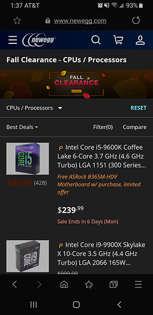
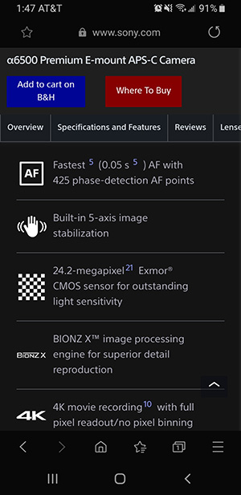

Hick's Law
Newegg
https://www.newegg.com/ There are a few ways that using design to filter choices is demonstrated on this page. While this website offers a variety of products, we are already on a page that is only meant to show one type of product (CPUs). On a bar above the product list, you also find a drop down menu which enables users to sort the list by different relevant metrics such as price or popularity. Next to that is an actual filter button, where users can narrow down their search by only showing products that fall within certain categories, such as product line or manufacturer or feature.
Alignment
Sony
https://www.sony.com/ The display of this products features is helped by the use of alignment. Each feature is represented by an icon, all of which are aligned to the left. In line with each of these icons is a description of that feature and how it is expressed specifically by this product. Even without the included horizontal lines, the use of alignment on this page makes it easy for users to understand and digest the information being provided.
Fitt's Law
Alltrails
https://www.alltrails.com/An interesting thing is happening with this page where three different buttons with three different css controlled rules all kind of overlap in one spot. What you will notice though is that the call to action is the most prominent button. The return to top button is obvious, but smaller, and colored in such a way that it won't be a complete distraction as you scroll. The last button is the cookie policy button, which most users will not use and will wish to ignore. It is only text and stays small and along the bottom. The hierarchy for what the designer would prefer your attention to be fixed on is quite clear.